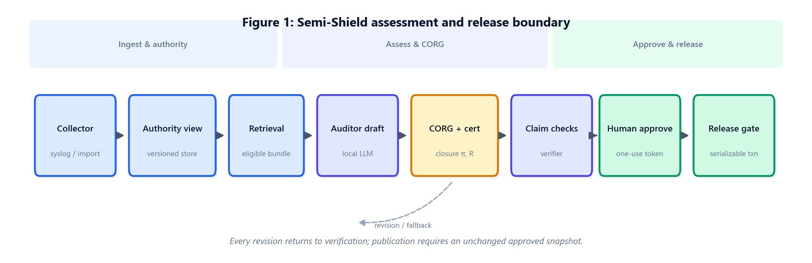
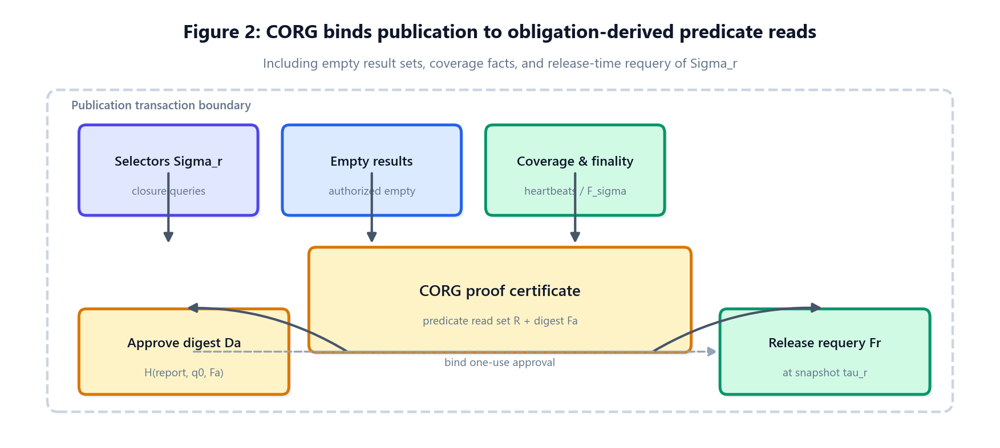
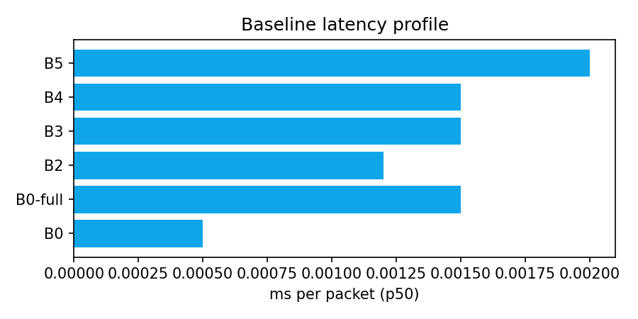
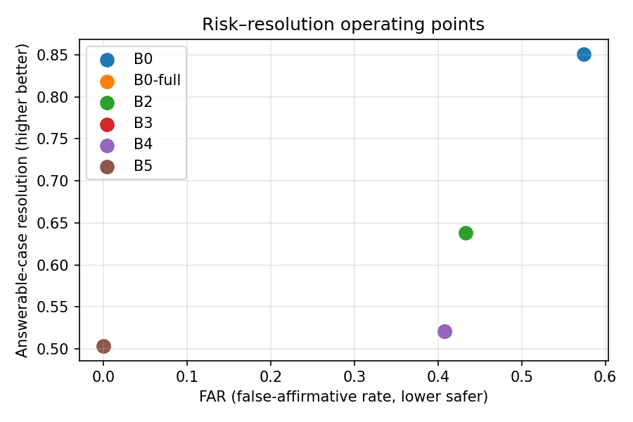

快速摘要
965證據登錄筆數
10,444,573彙總 syslog 事件
895覆核佇列
99手動匯入
522SAC 評估封包
0.8853Cohen's κ（pilot）
Gold 標籤（SAC）：SUPPORTED 240 · VIOLATED 42 · INSUFFICIENT 240
檔案一覽
| 路徑 | 大小 KB | 類型 |
|---|---|---|
data.zip | 205.0 | .zip |
eval_sac/figures/figure1_architecture.png | 99.8 | .png |
eval_sac/figures/figure1_architecture.svg | 97.0 | .svg |
eval_sac/figures/figure2_corg_release.png | 110.2 | .png |
eval_sac/figures/figure2_corg_release.svg | 81.8 | .svg |
eval_sac/figures/Gemini_Generated_Image_vei6rivei6rivei6.jfif | 1364.4 | .jfif |
eval_sac/figures/Gemini_Generated_Image_z0bucrz0bucrz0bu.jfif | 1485.1 | .jfif |
eval_sac/figures/latency_p50.png | 19.0 | .png |
eval_sac/figures/risk_resolution_curve.png | 44.1 | .png |
eval_sac/full_data_bundle.json | 11.0 | .json |
eval_sac/FULL_DATA_SUMMARY.md | 1.3 | .md |
eval_sac/results.json | 3.5 | .json |
eval_sac/scenario_manifest.json | 126.7 | .json |
eval_sac/scenario_manifest_full.json | 157.3 | .json |
evidence_registry.jsonl | 1483.1 | .jsonl |
manual_imports.jsonl | 63.9 | .jsonl |
review_queue.jsonl | 620.8 | .jsonl |
證據與覆核
證據覆核狀態
approved：714 筆pending：225 筆rejected：26 筆
覆核佇列狀態
approved：642 筆pending：189 筆rejected：64 筆
手動匯入（Annex A）
A.5.1：4 筆A.5.10：1 筆A.5.11：1 筆A.5.12：1 筆A.5.13：1 筆A.5.14：1 筆A.5.16：1 筆A.5.17：1 筆A.5.18：1 筆A.5.2：4 筆A.5.20：1 筆A.5.21：1 筆A.5.22：1 筆A.5.23：1 筆A.5.24：1 筆A.5.25：1 筆A.5.26：1 筆A.5.27：1 筆A.5.28：1 筆A.5.29：1 筆A.5.3：4 筆A.5.30：1 筆A.5.31：1 筆A.5.32：1 筆A.5.33：1 筆A.5.34：1 筆A.5.35：1 筆A.5.36：1 筆A.5.37：1 筆A.5.4：1 筆A.5.5：1 筆A.5.6：1 筆A.5.7：4 筆A.5.8：1 筆A.5.9：1 筆A.6.1：1 筆A.6.2：1 筆A.6.3：1 筆A.6.4：1 筆A.6.5：1 筆A.6.6：1 筆A.6.7：1 筆A.6.8：1 筆A.7.1：1 筆A.7.10：1 筆A.7.11：1 筆A.7.12：1 筆A.7.13：1 筆A.7.14：1 筆A.7.2：1 筆A.7.3：1 筆A.7.4：1 筆A.7.5：1 筆A.7.6：1 筆A.7.7：1 筆A.7.8：1 筆A.7.9：1 筆A.8.1：1 筆A.8.10：1 筆A.8.11：1 筆A.8.12：1 筆A.8.13：1 筆A.8.14：1 筆A.8.15：1 筆A.8.16：1 筆A.8.17：1 筆A.8.18：1 筆A.8.2：1 筆A.8.20：1 筆A.8.21：1 筆A.8.22：1 筆A.8.23：1 筆A.8.25：1 筆A.8.26：1 筆A.8.27：1 筆A.8.28：1 筆A.8.29：1 筆A.8.3：1 筆A.8.30：1 筆A.8.31：1 筆A.8.32：1 筆A.8.33：1 筆A.8.34：1 筆A.8.4：1 筆A.8.5：1 筆A.8.6：1 筆A.8.9：1 筆
SAC Table 4 — 判斷基線
FAR 越低越好（勿把非合規判成 SUPPORTED）。B5 含 CORG 約束。
| 基線 | FAR | 解析率 | Macro-F1 | 誤肯定數 |
|---|---|---|---|---|
| B0 — 僅 LLM（無 grounded 證據） | 57.45% | 85.11% | 0.4714 | 162 |
| B0-full — 保守基線（一律 INSUFFICIENT） | 0.00% | 50.35% | 0.6533 | 0 |
| B2 — LLM + 平面檢索 | 43.26% | 63.83% | 0.4436 | 122 |
| B3 — LLM + 圖檢索 | 40.78% | 52.13% | 0.4355 | 115 |
| B4 — Semi-Shield（無 CORG） | 40.78% | 52.13% | 0.4355 | 115 |
| B5 — Semi-Shield + CORG | 0.00% | 50.35% | 0.6533 | 0 |
SAC Table 5 — 證據釋出
| 策略 | 未授權釋出率 | 無關仍釋出 | 相關 n | 無關 n |
|---|---|---|---|---|
| AGT-cited | 100.00% | 100.00% | 36 | 36 |
| AGT-global | 0.00% | 100.00% | 36 | 36 |
| AGT+CORG | 0.00% | 100.00% | 36 | 36 |
| AGT+same_R | 0.00% | 100.00% | 36 | 36 |
實驗圖表



